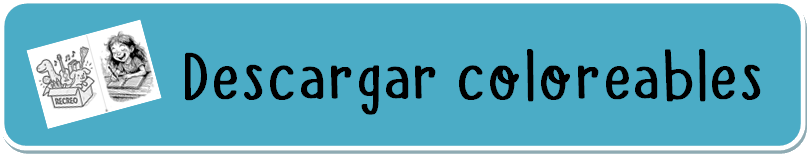

<!DOCTYPE html>
<html lang="en" >
<head>
<title>Mi Recreo</title>
<meta charset="utf-8">
<meta http-equiv="X-UA-Compatible" content="IE=edge">
<meta name="viewport" content="width=device-width, initial-scale=1">
<meta name="mobile-web-app-capable" content="yes">
<meta name="apple-mobile-web-app-capable" content="yes" />
<meta name="apple-mobile-web-app-title" content="Mi Recreo" />
<meta name="generator" content="VisualNEO Web (19.9.16)" />
<meta name="date" content="2025-06-18 22:34" />
<meta name="copyright" content="Copyright 2025 Ricardo Contard" />
<link rel="stylesheet" href="css/bootstrap.min.css">
<link rel="stylesheet" href="css/bootstrap-theme.min.css">
<link rel="stylesheet" href="css/nzAnimate.min.css">
<link rel="stylesheet" href="css/neoapp-ui.min.css">
<link rel="stylesheet" href="css/style.css">
<link rel="stylesheet" href="fuentes.css">
</head>
<body id="ng-app" ng-app="NeoApp" ng-cloak>
<div ng-controller="NeoApp_CoreCtrl" ng-view ng-cloak id="ng-view" class="app-viewport[NAB._pageEffect]"></div>
<script type="text/ng-template" id="Intro">
<div id="Intro">
<div id="IntroTimbre" class="[NAB.IntroTimbre_effect]" ng-style="NAB.IntroTimbre_style" ng-hide="NAB.IntroTimbre_hidden" ng-disabled="NAB.IntroTimbre_disabled"><div align="center"><br><br><br><a href="#!Portada"></a><hr><p>Toca el timbre para comenzar...</p></div>
</div>
</div>
</script>
<script type="text/ng-template" id="Portada">
<div id="Portada">
<div id="Pie" class="[NAB.Pie_effect]" ng-style="NAB.Pie_style" ng-hide="NAB.Pie_hidden" ng-disabled="NAB.Pie_disabled"><div align="center"><p>© 2025 . <a href="https://iosoft2022.github.io" target="_blank">IoSoft Producciones</a></p></div>
</div>
<div id="Player1" class="[NAB.Player1_effect]" ng-style="NAB.Player1_style" ng-hide="NAB.Player1_hidden" ng-disabled="NAB.Player1_disabled"><audio autoplay="true" controls="controls"><source src="archivos/audio1.mp3" type="audio/mpeg"/>
</div>
<div id="cont_portada" class="[NAB.cont_portada_effect]" ng-style="NAB.cont_portada_style" ng-hide="NAB.cont_portada_hidden" ng-disabled="NAB.cont_portada_disabled"><div align="center"><h1>Mi Recreo</h1><br><h3>de cuentos y canciones</h3><hr><br><hr>
<a href="#!Leer"></a>&nbsp;&nbsp;&nbsp;&nbsp;&nbsp;&nbsp;<a href="#!Autor"></a><br>
<a href="#!Introduccion"></a><br>
<br><hr>
<p>©  Ricardo Martín Contard, 2025<br>
ISBN:  978-631-00-8288-2<br>
Hecho en Argentina<br>
Hecho el depósito que previene la ley 11.723.<br>
Todos los derechos reservados<br>
</p>


</div>
</div>
</div>
</script>
<script type="text/ng-template" id="Leer">
<div id="Leer">
<iframe id="IFrameLeer" name="IFrameLeer" width="768px" height="1033px" frameborder="0" class="[NAB.IFrameLeer_effect]" ng-style="NAB.IFrameLeer_style" ng-hide="NAB.IFrameLeer_hidden" ng-disabled="NAB.IFrameLeer_disabled" ng-src="leer/leer.html"></iframe>
<div id="MenuSup" class="[NAB.MenuSup_effect]" ng-style="NAB.MenuSup_style" ng-hide="NAB.MenuSup_hidden" ng-disabled="NAB.MenuSup_disabled"><div align="left">&nbsp;&nbsp;&nbsp;&nbsp<a href="#!Portada"></a><br></div>
<h3 id="TituloMenu" class="neo-top-center [NAB.TituloMenu_effect]" ng-style="NAB.TituloMenu_style" ng-hide="NAB.TituloMenu_hidden" ng-disabled="NAB.TituloMenu_disabled" ng-click="TituloMenu_click()">M&nbsp;e n ú</h3>
</div>
</div>
</script>
<script type="text/ng-template" id="Autor">
<div id="Autor">
<div id="Cont_Autor" class="[NAB.Cont_Autor_effect]" ng-style="NAB.Cont_Autor_style" ng-hide="NAB.Cont_Autor_hidden" ng-disabled="NAB.Cont_Autor_disabled"><div align="center"></div>
<hr>
<p>
<strong>Nombre: </strong>Ricardo Martín Contard<br><br>
<strong>Hábitat: </strong> Bibliotecas<br><br>
<strong>Residencia actual: </strong> Concepción del Uruguay (Entre Ríos)<br><br>
<strong>Experiencia: </strong>Hijo desde 1980. Hermano desde 1984. Músico desde 1992. Técnico Bibliotecario desde 2001. Padre desde 2007. Esposo desde 2009. Promotor de lecturas desde 2015. Amigo de quienes gusten de estas obras, desde hoy en adelante...<br><br>
<strong>Obras publicadas: </strong> Antología de cuentos "<i>El hombre cabeza de caballo</i>" (2018)<br><br>
<strong>Discos: </strong>30<br><br>
<strong>Premios: </strong>3 veces ganador del 1º Premio del "Concurso Provincial de Poesía y Cuento Corto" (Colonia Elía)<br><br>
<strong>Aspiraciones: </strong>Ser el 4 veces ganador del "Concurso Provincial de Poesía y Cuento Corto" (Colonia Elía)<br><br>
<strong>Redes: </strong><br>
&nbsp;&nbsp;&nbsp;&nbsp;&nbsp;&nbsp;<a href="https://www.facebook.com/ricardo.contard" target="_blank"><strong>Facebook</strong></a>&nbsp;&nbsp;&nbsp;&nbsp;&nbsp;&nbsp;
&nbsp;&nbsp;&nbsp;<a href="https://www.instagram.com/ricardocontard.ok?utm_source=ig_web_button_share_sheet&igsh=ZDNlZDc0MzIxNw==" target="_blank"><strong>Instagram</strong></a><br><br>
&nbsp;&nbsp;&nbsp;&nbsp;&nbsp;&nbsp;<a href="https://ricardocontard.com.ar" target="_blank"><strong>Sitio Web</strong></a>&nbsp;&nbsp;&nbsp;&nbsp;&nbsp;&nbsp;&nbsp;&nbsp;&nbsp;
<a href="mailto:ricardocontard@gmail.com" class="text-primary">ricardocontard@gmail.com</a><br><br>&nbsp;&nbsp;&nbsp;&nbsp;&nbsp;&nbsp;<a href="https://api.whatsapp.com/send?phone=543442505214" target="_blank">WhatsApp</a>
</p>
<hr>
<div align="center">
<h4><p style="border: ridge #0f0fef 2px;"><br>Si querés recibir la visita del autor en tu escuela, y juntos disfrutar un <strong>recreo</strong> diferente, completá este <strong><a href="https://forms.gle/BGCDUHiaaGAhtZJ4A" target="_blank">FORMULARIO<br></a></strong></p></h4>
</div>
</div>
<div id="MenuSup" class="[NAB.MenuSup_effect]" ng-style="NAB.MenuSup_style" ng-hide="NAB.MenuSup_hidden" ng-disabled="NAB.MenuSup_disabled"><div align="left">&nbsp;&nbsp;&nbsp;&nbsp<a href="#!Portada"></a><br></div>
<h3 id="TituloMenu" class="neo-top-center [NAB.TituloMenu_effect]" ng-style="NAB.TituloMenu_style" ng-hide="NAB.TituloMenu_hidden" ng-disabled="NAB.TituloMenu_disabled" ng-click="TituloMenu_click()">M&nbsp;e n ú</h3>
</div>
</div>
</script>
<script type="text/ng-template" id="Introduccion">
<div id="Introduccion">
<div id="Cont_Intro" class="[NAB.Cont_Intro_effect]" ng-style="NAB.Cont_Intro_style" ng-hide="NAB.Cont_Intro_hidden" ng-disabled="NAB.Cont_Intro_disabled"><div align="center">
<br><h2>INTRODUCCION</h2>
<p>
Este libro fue creado para presentarse y compartirse en escuelas primarias de todo el país.<br>
Una colección de cuentos y canciones que no pretende ser más que un “recreo” de la rutinaria escena escolar.<br>
Recreo mediante el cual nos zambulliremos a explorar el mundo de las palabras y los libros.<br>
El destino pensado para estos textos es que no queden guardados<br>
entre estas páginas sino que mediante las artes del autor (y el oportuno aporte de las autoridades competentes…)<br>
puedan llegar a las escuelas, los salones de actos, las bibliotecas, y todo ambiente donde podamos encontrar
<br>ávidos oyentes y corazones abiertos a la aventura de comunicarse e interactuar sanamente y re-crear las imaginaciones.<br><br>
"Cuentos y canciones para re-crear lo ya creado",<br>aprendiendo las canciones, interactuando, y coloreando las ilustraciones.
<br></p><hr>
<h4>***<br>Desde aquí puedes descargar un PDF imprimible con las ilustraciones del libro, listas para colorear.<br><br>
<br><a href="https://drive.google.com/file/d/12f8QmqvyHWx5_jO8QelwrYt3gDKiCr6t/view?usp=sharing" target="_blank"></a><br>
<br>***<br>Además, junto a los textos, encontrarás un reproductor para escuchar cada canción o cuento:<br><br>
</h4>
</div>
</div>
<div id="MenuSup" class="[NAB.MenuSup_effect]" ng-style="NAB.MenuSup_style" ng-hide="NAB.MenuSup_hidden" ng-disabled="NAB.MenuSup_disabled"><div align="left">&nbsp;&nbsp;&nbsp;&nbsp<a href="#!Portada"></a><br></div>
<h3 id="TituloMenu" class="neo-top-center [NAB.TituloMenu_effect]" ng-style="NAB.TituloMenu_style" ng-hide="NAB.TituloMenu_hidden" ng-disabled="NAB.TituloMenu_disabled" ng-click="TituloMenu_click()">M&nbsp;e n ú</h3>
</div>
</div>
</script>
<script type="text/ng-template" id="NewDialog">
<div id="DialogContainer1" class="modal-dialog modal-sm"><div class="modal-content" style="height:100%">
</div></div>
</script>
<script src="js/jquery.min.js"></script>
<script src="js/angular.min.js"></script>
<script src="js/angular-touch.min.js"></script>
<script src="js/angular-route.min.js"></script>
<script src="js/angular-animate.min.js"></script>
<script src="js/angular-sanitize.min.js"></script>
<script src="js/bootstrap.min.js"></script>
<script src="js/neoapp.min.js"></script>
<script src="js/neoapp-ui.min.js"></script>
<script src="js/main.js"></script>
</body>
</html>
